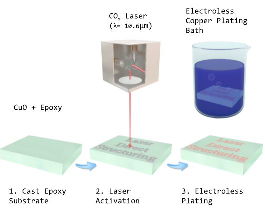

Over my senior year of High School, I took AP Research, a class where students pick a topic of academic interest and then conduct a research project culminating in an academic paper and presentation along with an oral defense.
At the time I was interested in circuit board (PCBs) fabrication and wanted to see if I could develop my own way of cheaply and easily fabricating PCBs.
PCBs are an incredibly important part of all modern tech being the (almost literal) backbone of modern electronics. PCBs are the physical board on which electronic components such as microcontrollers and resistors are mounted and connected to one another. They are typically made of thin boards of copper laminated fiberglass. To create connections between components, the unwanted copper is removed in a chemical etching process. This process is cheap and has allowed the wide proliferation of PCBs but is best suited for large manufactures to do. As such, there is an ongoing need to develop a cleaner and smaller scale process for small scale production of PCBs such as for prototyping or for hobbyist use.
LISM or laser induced selective metallization (fancy way of saying lasers turn metal oxides into elemental metal) was one such method I learned about that I felt had potential for small scale circuit board production.
If you'd like to read more about this topic, a link to a restricted version of my paper is included below. If you would like a complete version please email me at
hwysonggrass@wisc.edu